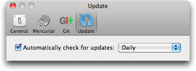

Preferences: Update

Here you can turn on or off automatic updates for SourceTree, and change the frequency at which it checks (not available on the App Store version).
See also
General Preferences
Diff Preferences
Mercurial Preferences
Git Preferences
Custom Actions Preferences